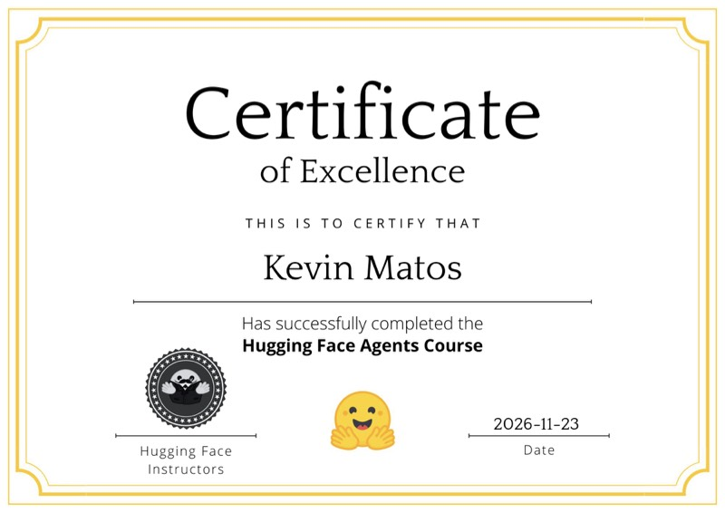
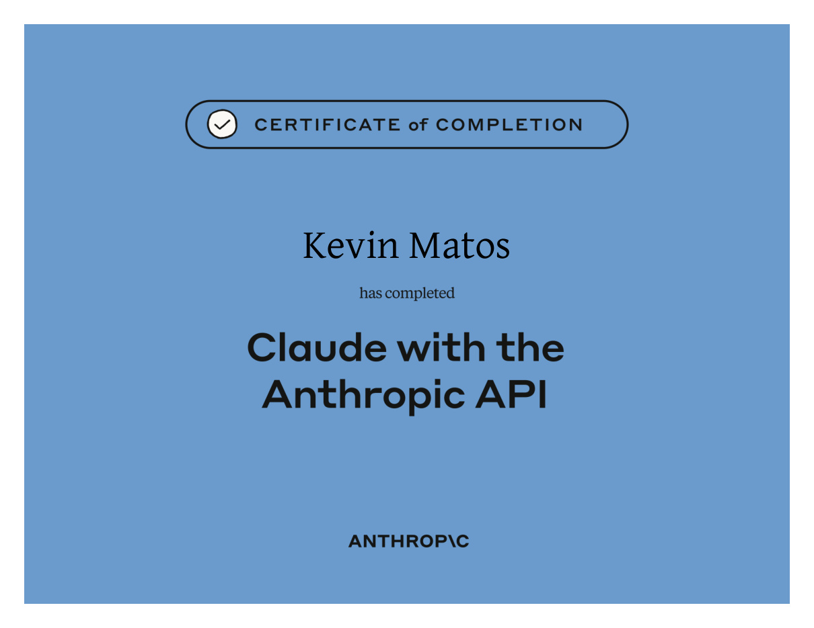

Certifications & languages
Always learning, with proof.
Every certificate links to its public verification page.
Portuguese
Native
Brazilian
Hugging Face · Nov 2026

AI Agents Course
Certificate of Excellence. Final project scored 70% on GAIA.
Verify
Anthropic · Nov 2026

Claude with the Anthropic API
API, tool use, RAG with embeddings and BM25, prompt caching, evals, MCP and agent workflows.
Verify
Anthropic · Nov 2026

Introduction to Model Context Protocol
Building MCP servers and clients for tools and resources.
Verify
Also certified